03
核心样本看板
/ 36 Core Cases以下 36 个案例同时跨越"小游戏 + 爆款 + 世界级"三道门槛，按综合分由高到低静态陈列。
S
Stumble Guys
蛋仔式闯关 / Stumble Guys · C016
100分
多人闯关派对游戏（类"糖豆人"）——最多数十人同场障碍竞速。跨移动/PC/主机，是"合作竞速 + 搞笑物理"的跨文化爆款。
2024年官方披露50M+月玩家、近700M下载
🌍 欧洲→全球
M
My Talking Tom
我的汤姆猫 · C042
97分
虚拟宠物养成——养电子猫、喂食互动。是"虚拟宠物 + 长期养成"移动端始祖级爆款。
全球长期运营并形成Talking Tom & Friends系列IP
🌍 斯洛文尼亚→全球/中国
M
Magic Tiles 3
钢琴块3 · C049
97分
音乐节奏手游——踩音符弹钢琴/歌曲。是"音乐 + 节奏 + UGC 曲库"的低成本爆款范式。
Amanotes全球音乐游戏代表，长期覆盖多地区用户
🌍 越南→全球
G
Grow a Garden
种植花园 · C011
95分
Roblox 平台上的种植经营游戏——种菜、收获、交易，离线也在长。曾创下单平台 2200 万同时在线（CCU）纪录，是 UGC 内容容器的极致案例。
2200万同时在线（2025.7世界纪录）；月收入超1亿元；Roblox 2025 DAU 1.265亿
🌍 海外生态→全球
R
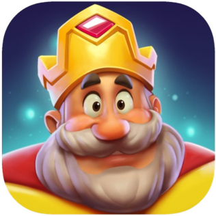
Royal Match
Royal Match · C010
94分
三消（Match-3）手游——经典"交换相邻宝石消除"，靠角色 IP 与关卡叙事驱动。全球三消收入 Top 级别，是"小游戏外壳 + 重内容供给"的典范。
2025年3月全球手游收入第2；官方称每日服务数百万玩家
🌍 海外→全球
S
Subway Surfers
地铁跑酷 · C021
94分
跑酷手游——无尽躲避列车与警察。全球累计下载最高的手游之一，是"单手操作 + 持续内容"的长线爆款。
2025年3月全球手游下载第4；官方长期全球运营
🌍 欧洲→全球/中国
C
Candy Crush Saga
糖果传奇 · C022
94分
三消鼻祖手游——交换糖果三连消除，关卡递进。定义了移动三消品类，年全球收入长期 Top。
持续更新至18,000+关卡级规模，全球长线运营十余年
🌍 欧洲→全球/中国
R
Royal Kingdom
皇家王国 · C050
94分
King 出品的三消 + 王国建造手游——交换宝石三消推进王国建设剧情。Royal Match 的姊妹篇，验证"三消 + 建造叙事"的矩阵化打法。
Dream Games在Royal Match之后推出的全球化新品
🌍 土耳其→全球
P
Project Makeover
改造计划 · C036
93分
装扮解谜手游——消除关卡解锁人物改造。是"三消 + 装扮叙事"组合玩法的代表。
官方披露达到100M玩家、曾进入166个国家下载Top 10
🌍 中国团队→全球
A
Among Us
在我们之中 / 太空狼人杀 · C017
92分
太空狼人杀——4–15 人合作做任务，内鬼暗中破坏。2020 年靠直播/短视频引爆全球，是"社交推理 + 共同事件"的标杆。
获2020 TGA最佳多人和最佳移动游戏；形成全球直播现象
🌍 美国→全球/中国传播
S
Slither.io
蛇蛇大作战类 · C026
92分
io 类生存游戏——操控光蛇吃光点变长、别撞别人。浏览器即开即玩，定义".io"多人在线品类。
形成全球实时吞噬竞技母体
🌍 美国→全球/中国
N
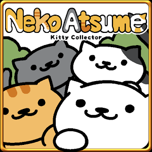
Neko Atsume
猫咪后院 · C039
92分
放置收集游戏——摆碗等猫来、收集猫与纪念品。日本现象级"放置治愈"，定义了放置收集品类。
长期多语言运营并形成全球猫咪休闲IP
🌍 日本→全球/中国
B
Block Blast!
方块爆破 · C001
91分
超休闲方块消除——把同色方块拖到一起消除，规则 3 秒可懂。累计下载 5.5 亿次，2025 年连续多月登顶全球手游下载榜，是"极简玩法 + 全球买量"跑通的世界级样本。
累计装机5.5亿次；2025年3-5月连续三月Sensor Tower全球第一
🌍 中国团队→全球
C
Crossy Road
天天过马路 · C025
91分
极简闯关游戏——像"青蛙过河"无限前进躲车流。像素低面风 + 一指操作，是"超休闲美学"代表作。
官方称350M+玩家
🌍 澳大利亚→全球/中国
M
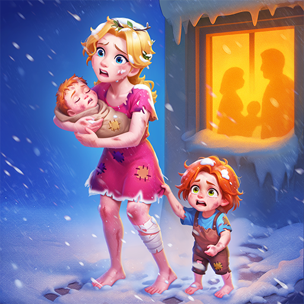
Matchington Mansion
梦幻家园式豪宅改造 · C037
90分
三消 + 装修经营——消消乐推进豪宅翻修。是"三消外壳 + 装修目标"长线留存范式。
官方披露达到100M玩家、长期全球运营
🌍 中国团队→全球
G
Gardenscapes
梦幻花园 · C043
90分
三消 + 装修剧情经营手游——用三消关卡推进别墅花园翻修剧情。Playrix 代表作，全球长线收入标杆，是"三消外壳 + 叙事装修目标"留存范式的开创者。
全球长线Match-3经营代表，在中国拥有本地发行历史
🌍 国际团队→全球/中国
S
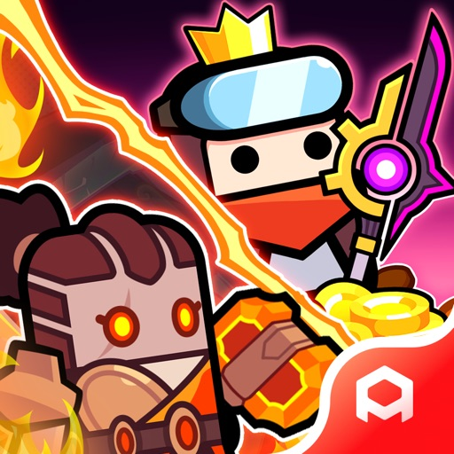
Survivor.io
弹壳特攻队 · C008
89分
移动端"吸血鬼幸存者 Like"——自动开火清怪、手动走位，越久越强。把 PC 肉鸽生存压缩成单手可玩的超休闲爆款。
全球多平台长期运营的轻Roguelike代表
🌍 中国团队→全球
V
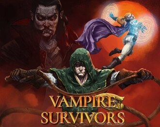
Vampire Survivors
吸血鬼幸存者 · C018
89分
PC 肉鸽生存游戏——自动战斗、手动升级、越战越爽。把"割草"做成极致爽感并反向输出移动端，定义了一个品类。
成为“幸存者Like”玩法母体并持续跨平台扩展
🌍 英国→全球/中国
S
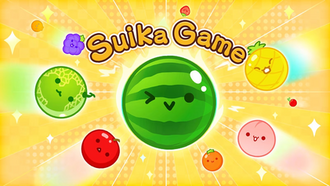
Suika Game
西瓜游戏 / 合成大西瓜 · C019
89分
物理合成游戏——相同水果相撞合并成更大的，直到西瓜。极简物理 + 合成反馈，国内"合成大西瓜"即其爆款仿作。
从日本本土产品发展为全球直播与仿作热潮
🌍 日本→全球/中国
P
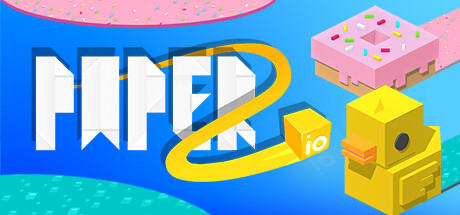
Paper.io 2
纸片大作战2 · C046
89分
io 领地圈地争夺手游——控制纸片蛇圈地盘、撞别人出局。浏览器/移动即开即玩，是".io 领地争夺"的移动端延续。
全球长期下载型超休闲代表
🌍 法国发行→全球
H
Hole.io
黑洞大作战 · C048
89分
io 吞噬城市手游——操控黑洞吞食车辆建筑、越长越大。物理喜剧 + io 机制，靠短视频传播爆红。
跨移动与主机传播，形成大量同类吞噬玩法
🌍 法国发行→全球
S
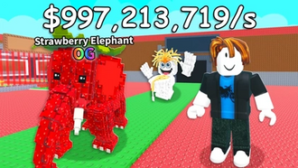
Steal a Brainrot
偷走脑腐 · C012
88分
Roblox 收集合成游戏——偷走并饲养"脑腐"怪物，靠离谱梗传播。2025 年现象级，验证"短视频梗 + 收集循环"的爆发力。
2025年Roblox年度搜索第3，官方称其为破纪录体验
🌍 海外生态→全球
F
Fruit Ninja
水果忍者 · C023
88分
体感切割游戏——滑动切水果、躲炸弹。触屏体感的开山作之一，跨多终端常青。
成为全球触屏游戏早期代表并跨多终端延伸
🌍 澳大利亚→全球/中国
I
I Am Cat
我是猫 · C033
88分
第一人称猫模拟——扮演猫搞破坏、逗主人。靠 TikTok/短视频自然传播爆红，是"声控/体感 + 短视频"新传播样本。
2025年3月累计约15M下载，流行于美国、墨西哥、德国、土耳其、菲律宾
🌍 海外→多区域
L
Ludo King
Ludo King · C034
88分
数字桌游——把传统 Ludo/飞行棋搬到手机，跨代同玩。印度及南亚国民级，是"传统玩法数字化 + 社交"的跨文化样本。
2025年3月全球手游下载第5
🌍 印度→全球
T
Township
梦想城镇 · C044
88分
农场 + 城市建造混合经营手游——种田、加工、建镇、与邻居交易。Playrix 另一常青作，是"慢节奏经营 + 社交交易"的全球化样本。
全球运营十余年的轻经营代表
🌍 国际团队→全球/中国
B
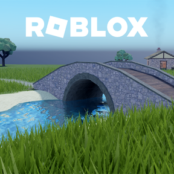
Brookhaven RP
布鲁克海文 · C014
87分
Roblox 角色扮演——在小镇里扮演日常角色、自由社交。低规则高自由，是 Roblox 长期常青的"一起玩"范式。
2025年Roblox年度搜索第1
🌍 海外生态→全球
A
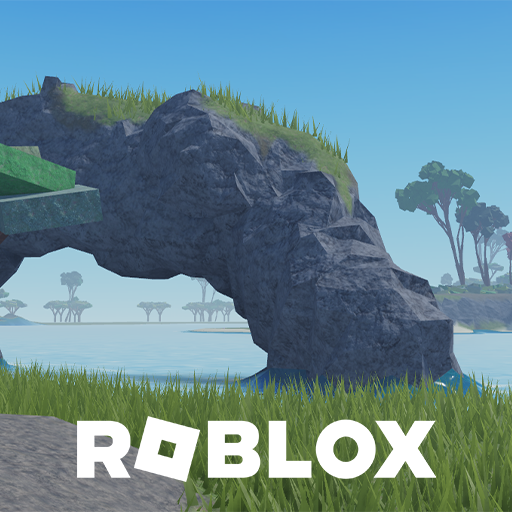
Adopt Me!
领养我 · C015
87分
Roblox 领养宠物收集游戏——孵蛋、养宠物、交易。曾长期占据 Roblox 同时在线榜首，是"收集 + 交易 UGC"的始祖级样本。
Roblox长期代表性宠物社交体验
🌍 海外生态→全球
M
Merge Mansion
合并庄园 · C040
87分
合并解谜手游——合并物品解锁剧情与庄园。是"合并机制 + 悬疑叙事"的长线样本。
全球长期运营并推动Merge叙事赛道成熟
🌍 芬兰→全球
A
Archero
弓箭传说 · C007
86分
Roguelike 弹幕射击——自动射击、手动走位躲弹，每关随机选技能。开创"放置 + 肉鸽"移动端范式，是国产游戏出海标杆之一。
长期全球发行并形成系列化产品方法
🌍 中国团队→全球
G
Gossip Harbor
绯闻港口 · C035
85分
合并叙事手游——三消/合并推进剧情、装修餐厅。是"合并 + 剧情 + 经营"长线变现的标杆。
全球累计收入5.3亿美元；2025上半年合成手游收入第一；月流水近4亿元
🌍 中国团队→全球
D
Dress to Impress
盛装打扮 · C013
83分
Roblox 换装社交游戏——限时搭配走秀、玩家互评。是"表达型 UGC + 青少年社交"的高留存样本。
进入Roblox全球热门与搜索文化案例
🌍 海外生态→全球
H
Helix Jump
螺旋跳跃 · C047
83分
螺旋塔下落跳跃超休闲手游——控制球沿螺旋塔层层下落、避开彩色障碍。一指操作全球爆款，超休闲标杆之一。
成为全球超休闲标志性玩法之一
🌍 法国发行→全球
B
Brain Out
脑洞大师 · C045
79分
脑筋急转弯解谜手游——反套路、非常规答案的益智题。靠魔性反直觉短视频病毒传播，是"短视频驱动下载"的国产标杆。
在全球应用商店形成大量下载与同类仿作
🌍 中国团队→全球
C
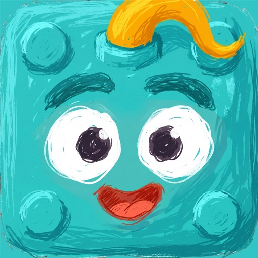
Color Block Jam
色块归位 · C061
78分
混合休闲解谜手游——滑动同色方块到对应出口归位。2025 年爆款，验证"超休闲解谜 + 温和元系统"的窗口期机会。
月流水约1000万美元
🌍 月流水约1000万美元；混休解谜头部
C
Cell Survivor / 看谁能打过
看谁能打过 · C059
74分
国产 Survivor.io Like 出海手游——自动开火清怪、手动走位，重度买量 + 混合变现。中国团队"出口转内销"的海外爆款样本。
2026.2月流水6761万元；下载环比+756%
🌍 微信验证→出海爆发；2026.2月流水6761万元